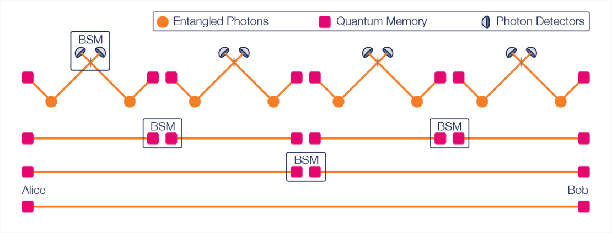
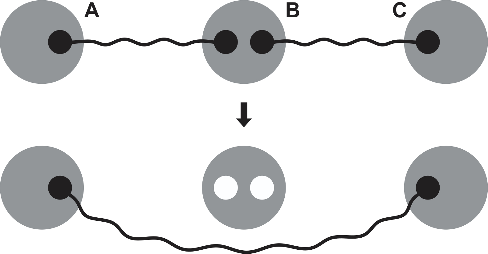
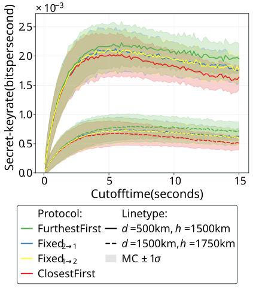
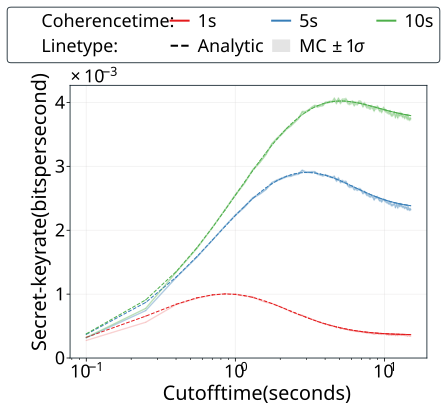
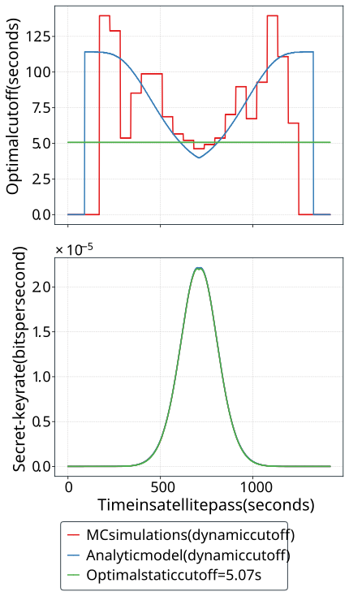
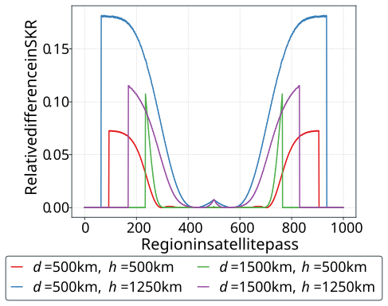
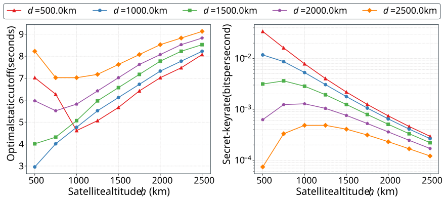

Optical fibers: lose 99% of signal over 100 km
doi.org/10.1038/ncomms15043

Satellites: experience less loss over long distances doi.org/10.1038/nature23655
Agustin Garcia Flores, Stav Haldar, Filip Rozpędek
University of Massachusetts Amherst
August 17, 2026

$m^\ast = m^\ast$ $\big(C_i,$ $p_i,$ $v_i$ $; t\big)$
Satellite hardware: single down link, swap
Ground Station hardware: single qubit storage, quantum memory decoherence
Figure of merit: SKR
Rate $\cdot$ (First link age $\sim$ Fidelity)
Free-space diffraction and atmospheric losses
$$p = \eta_{\text{fs}} \eta_{\text{atm}}$$
In far-field regime, $\eta_{\text{fs}} \propto d^{-2}$




